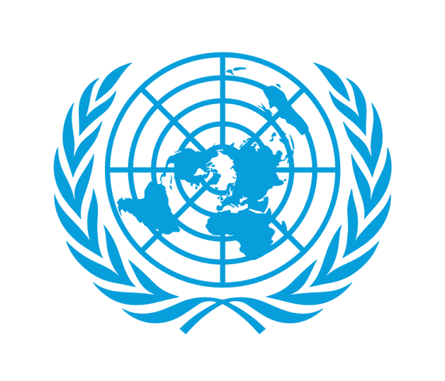
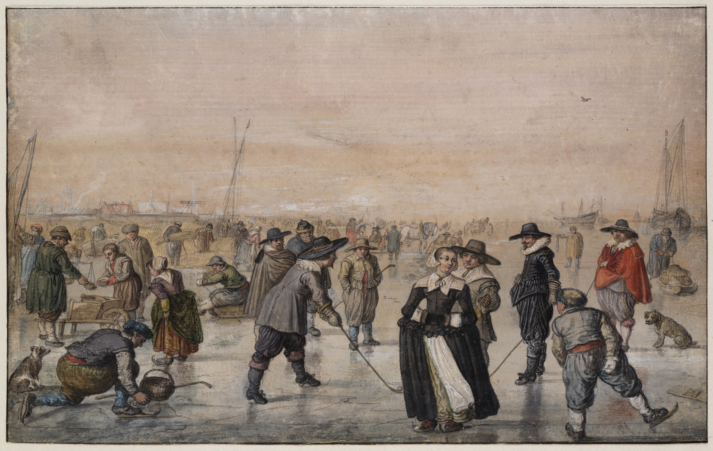
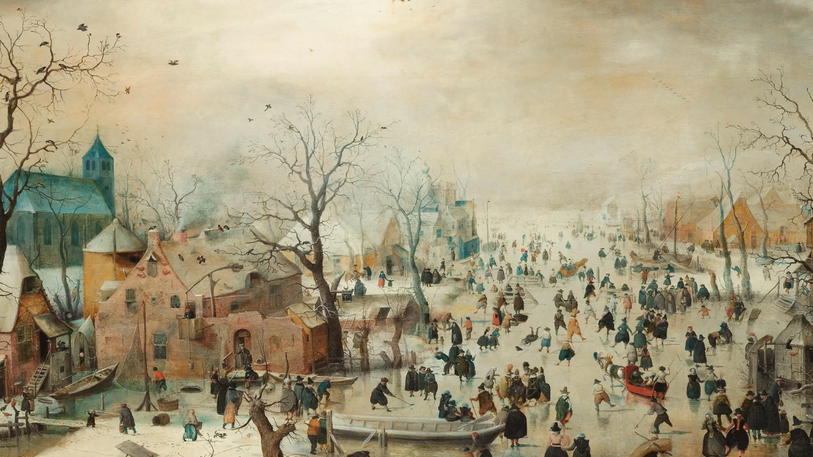
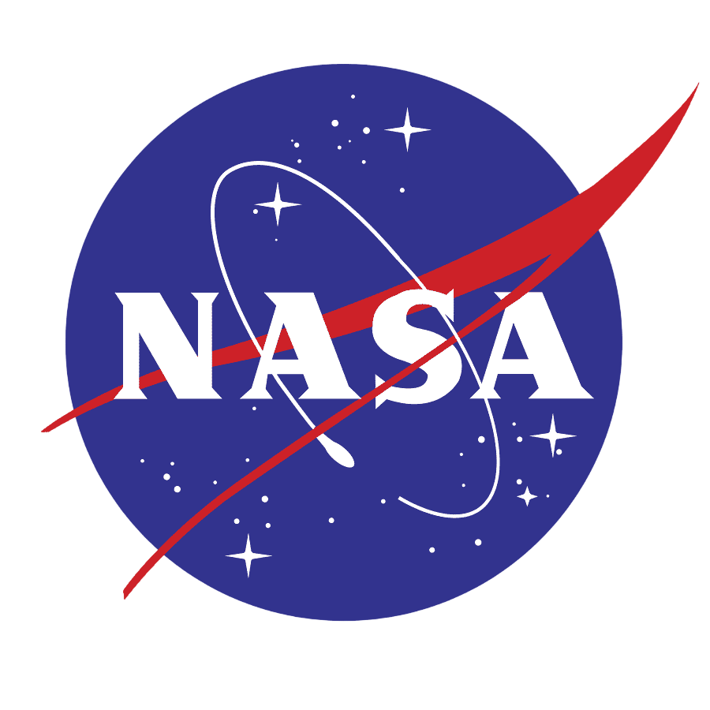
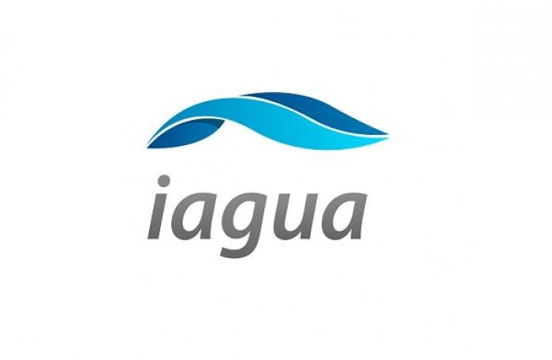
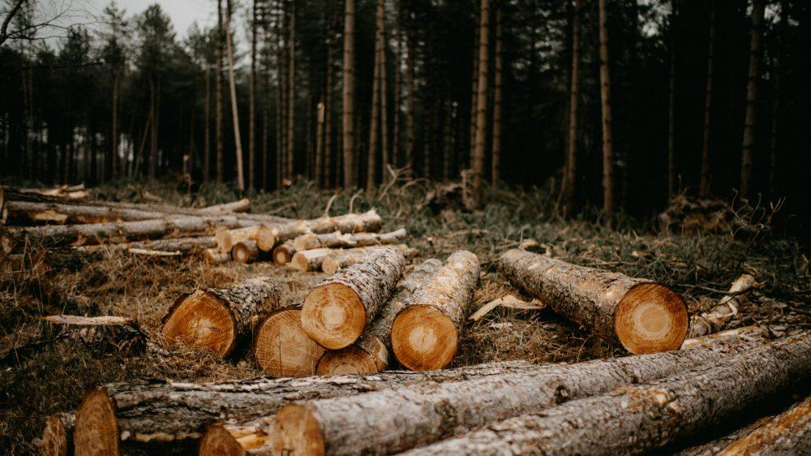
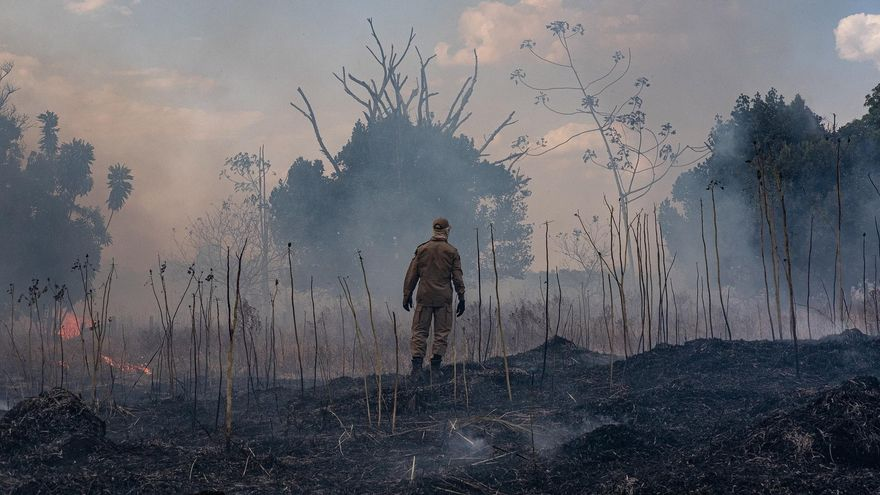
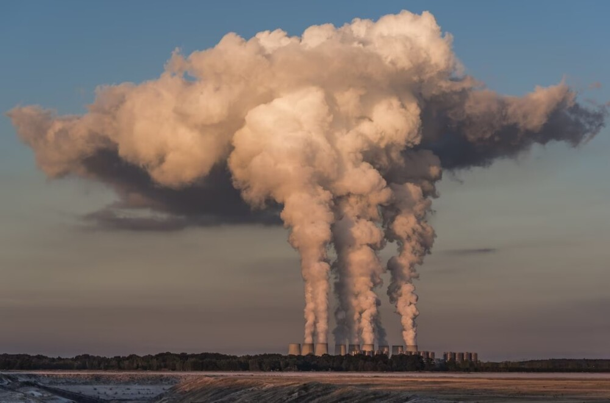

Es la modificación del clima que ha tenido lugar respecto de su historial a escala regional y global. En general, se trata de cambios de orden natural, pero actualmente, se los encuentra asociados con el impacto humano sobre el planeta. Se trata de un fenómeno complejo con numerosas variables como los ciclos del agua, vientos y manchas solares, posición de la Luna, impactos de meteoritos, entre otros.
Evidencia histórica del cambio climático



Como se mencionaba anteriormente “es la forma en la que bajo ciertas circunstancias las condiciones climáticas de la tierra son alteradas respecto a su historial”. Esto ha ocurrido múltiples veces a lo largo de la historia de la Tierra como en la Pequeña Era de Hielo, evento ocurrido justo después del periodo cálido medieval, específicamente entre los siglos XIV y XIX. Ocurrió principalmente por la alta actividad volcánica, cambios en las corrientes oceánicas y baja actividad solar. Este resultó un clima general más frío, veranos más cortos, frescos y húmedos e inviernos más frecuentes y bastante fríos.
¿Qué es el efecto invernadero?


Es la forma en que el calor queda atrapado cerca de la superficie de la Tierra por los "gases de efecto invernadero”. La Tierra es envuelta como en una manta que mantiene al planeta más cálido de lo que sería sin ella.

¿Y cómo es eso?
¿Por qué está ocurriendo el calentamiento global?

Deforestación

Destrucción de ecosistemas

Quema de combustibles fósiles

Desarrollo de la ganadería
¿Cuáles son las consecuencias del calentamiento global?

Derretimiento de polos
El derretimiento de polos es el fenómeno en el que el hielo ubicado en las zonas polares se derrite progresivamente. Esto provoca efectos importantes, entre ellos la elevación del nivel del mar, variaciones en las corrientes del océano, la disminución de los lugares donde viven especies como los osos polares y modificaciones en el clima de todo el planeta.